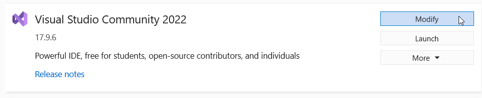
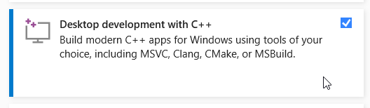
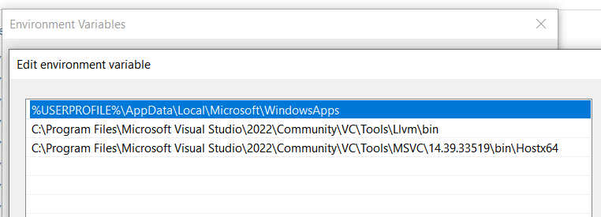

Building the Client
The goal of this section is to set up a build environment for developing and testing the Nextcloud Desktop client. If you just want to use the Nextcloud Desktop client without developing and testing it, you should download the latest stable build instead.
Note
These instructions represent a particular streamlined and easy-to-understand methodology, but they are by no means the only way of setting up a build environment.
The steps listed here have been tested multiple times and should allow you to build the client and/or the documentation with not warnings or errors. These instructions should be current with the version, latest, of the Nextcloud Client with which it ships. If you are using the most recent version of these instructions, and you run into errors or warnings with the latest code from the repository, please open a GitHub Issue to let us know so we can document a workaround or fix any underlying problems.
Using GitHub
By default, cloning the GitHub repository will give you the “master” branch, which is the most recent. If for some reason you want to build an older version of the Nextcloud Desktop client, you can choose a branch corresponding with that version. However, for older versions of the client, please be mindful that any issues present may have been fixed in more recent versions.
Note
Doing anything other than just downloading the existing code will require you to have a GitHub account.
If your goal in cloning and building the Nextcloud Desktop client is to contribute to its development, and you are not already a “collaborator” on the Nextcloud Desktop GitHub repository, you will need to create a “fork” by clicking the “fork” button in the upper right on any GitHub page in the repository. It is important to do this in advance because the URL for cloning the repository is different for a fork than for the main official version.
When cloning a GitHub repository, you have two options for authenticating your GitHub account, SSH or HTTPS. SSH requires additional setup but is more secure and simplifies things later on. For an explanation of the differences between HTTPS and SSH, as well as instructions to set up SSH, see this GitHub help article on the subject.
The most basic version of the Git command for cloning a repository is as follows:
$ git clone <repository_url>
Which will clone the repository into the directory where you run the command.
The four versions of the git clone command are as follows:
HTTPS from the official repository:
$ git clone https://github.com/nextcloud/desktop.git
SSH from the official repository:
$ git clone git@github.com:nextcloud/desktop.git
HTTPS from a fork (see above):
% git clone https://github.com/<github_username>/desktop.git
SSH from a fork (see above):
% git clone git@github.com:<github_username>/desktop.git
macOS Development Build
Note
While it is possible to do many of the following steps using GUI frontends, wherever possible the Terminal commands are listed instead, in order to streamline the process.
Install Xcode from the Mac App Store:
Then, in Terminal:
Install Xcode command line tools:
% xcode-select –install
Install Homebrew from brew.sh (which will just give you the following):
% /bin/bash -c "$(curl -fsSL https://raw.githubusercontent.com/Homebrew/install/HEAD/install.sh)"
Note
Under certain circumstances, you may get on error along the
lines of Permission denied @ apply2files when installing certain
Homebrew packages. This is a known issue and can be fixed by changing
the permissions on the affected files with the following command:
% sudo chown -R $(whoami):admin /usr/local/* \
&& sudo chmod -R g+rwx /usr/local/*
This workaround may lead to other shell warnings.
Install Homebrew packages:
% brew install git qt qtkeychain cmake openssl glib cmocka karchive
Certain Homebrew packages are not automatically linked in places where the build scripts can find them, so you can create a shell-profile script that will find and load them dynamically when you run a build:
% echo 'export QT_PATH=$(brew --prefix qt6)/bin' >> ~/.nextcloud_build_variables % echo 'export CMAKE_PREFIX_PATH=$(brew --prefix qt6);$(brew --prefix karchive)' >> ~/.nextcloud_build_variables
Note
The name
~/.nextcloud_build_variablesis just a suggestion for convenience. You can use a different file or create an entire shell script, but this way of doing things is the simplest to explain.Clone the Nextcloud repository to a convenient location, such as
~/Repositories:% mkdir ~/Repositories
(if it doesn’t already exist), then:
% cd ~/Repositories
Note
The cloned repository can go basically anywhere your user account has write access, though it should not go in a directory synced with another cloud service (especially not iCloud Drive).
~/Repositoriesis recommended for tidiness and consistency.% git clone <repository_url>
(See the above section on using GitHub for an explanation of what URL to use.)
Create build directory:
% cd ~/Repositories/desktop % mkdir build
Generate the build files:
Note
By default Nextcloud Desktop will build in a protected directory on macOS, so you need to specify a build location. You can do this every time you build, or you can add it to your save build variables, like so:
% echo 'export CMAKE_INSTALL_PREFIX=~/Builds' >> ~/.nextcloud_build_variables
# If you want to build a macOS app bundle for distribution
% echo 'export BUILD_OWNCLOUD_OSX_BUNDLE=ON' >> ~/.nextcloud_build_variables
Replace ~/Builds with a different directory if you’d like the build to end up elsewhere.
% source ~/.nextcloud_build_variables % cd ~/Repositories/desktop/build % cmake ..
Compile and install:
% make install
Windows Development Build
System requirements
Windows 10 or Windows 11
Python 3
PowerShell
Microsoft Visual Studio 2022 and tools to compile C++
Setting up Microsoft Visual Studio
Click on ‘Modify’ in the Visual Studio Installer:

Select ‘Desktop development with C++’

Handling the dependencies
We handle the dependencies using KDE Craft because it is easy to set it up and it makes the maintenance much more reliable in all platforms.
Set up KDE Craft as instructed in Get Involved/development/Windows - KDE Community Wiki - it requires Python 3 and PowerShell.
After running:
C:\CraftRoot\craft\craftenv.ps1
Add the desktop client blueprints - the instructions to handle the client dependencies:
craft --add-blueprint-repository [git]https://github.com/nextcloud/desktop-client-blueprints.git
craft craft
Install all client dependencies:
craft --install-deps nextcloud-client
Compiling
Make sure your environment variable %PATH% has no conflicting information to the environment you will use to compile the client. For instance, if you have installed OpenSSL previously and have added it to %PATH%, the OpenSSL installed might be a different version than what was installed via KDE Craft.
Open the Command Prompt (cmd.exe)
Run:
"C:\Program Files\Microsoft Visual Studio\2022\Community\VC\Auxiliary\Build\vcvarsall.bat" x64
To use the tools installed with Visual Studio, you need the following in your %PATH%:

Alternatively you can use the tools installed with KDE Craft by adding them to %PATH%:
set "PATH=C:\CraftRoot\bin;C:\CraftRoot\dev-utils\bin;%PATH%"
Note
C:CraftRoot is the path used by default by KDE Craft. When you are setting it up you may choose a different folder.
Create build folder, run cmake, compile and install:
cd <desktop-repo-path>
mkdir build
cd build
cmake .. -G Ninja -DCMAKE_INSTALL_PREFIX=. -DCMAKE_PREFIX_PATH=C:\CraftRoot -DCMAKE_BUILD_TYPE=RelWithDebInfo
cmake --build . --target install
Now you can use Qt Creator to import the build folder with its configurations to be able to work with the code.
Windows Installer (i.e. Deployment) Build (Cross-Compile)
Due to the large number of dependencies, building the client installer for Windows is currently only officially supported on openSUSE, by using the MinGW cross compiler. You can set up any currently supported version of openSUSE in a virtual machine if you do not have it installed already.
In order to make setup simple, you can use the provided Dockerfile to build your own image.
Assuming you are in the root of the Nextcloud Client’s source tree, you can build an image from this Dockerfile like this:
cd admin/win/docker docker build . -t nextcloud-client-win32:<version>
Replace
<version>by the version of the client you are building, e.g. latest for the release of the client that this document describes. If you do not wish to use docker, you can run the commands inRUNmanually in a shell, e.g. to create your own build environment in a virtual machine.Note
Docker images are specific to releases. This one refers to latest. Newer releases may have different dependencies, and thus require a later version of the docker image! Always pick the docker image fitting your release of Nextcloud client!
From within the source tree Run the docker instance:
docker run -v "$PWD:/home/user/client" nextcloud-client-win32:<version> \ /home/user/client/admin/win/docker/build.sh client/ $(id -u)
It will run the build, create an NSIS based installer, as well as run tests. You will find the resulting binary in an newly created
build-win32subfolder.If you do not wish to use docker, and ran the
RUNcommands above in a virtual machine, you can run the indented commands in the lower section ofbuild.shmanually in your source tree.
Finally, you should sign the installer to avoid warnings upon installation. This requires a Microsoft Authenticode Certificate
osslsigncodeto sign the installer:osslsigncode -pkcs12 $HOME/.codesign/packages.pfx -h sha256 \ -pass yourpass \ -n "ACME Client" \ -i "http://acme.com" \ -ts "http://timestamp.server/" \ -in ${unsigned_file} \ -out ${installer_file}For
-in, use the URL to the time stamping server provided by your CA along with the Authenticode certificate. Alternatively, you may use the official Microsoftsigntoolutility on Microsoft Windows.If you’re familiar with docker, you can use the version of
osslsigncodethat is part of the docker image.
Generic Build Instructions
Compared to previous versions, building the desktop sync client has become easier. Unlike earlier versions, CSync, which is the sync engine library of the client, is now part of the client source repository and not a separate module.
To build the most up-to-date version of the client:
Clone the latest versions of the client from Git as follows:
$ git clone git://github.com/nextcloud/client.git $ cd client $ git submodule update --init
Create the build directory
$ mkdir client-build $ cd client-build
Configure the client build
$ cmake -DCMAKE_BUILD_TYPE="Debug" ..
Note
You must use absolute paths for the
includeandlibrarydirectories.Note
On macOS, you need to specify
-DCMAKE_INSTALL_PREFIX=target, wheretargetis a private location, i.e. in parallel to your build dir by specifying../install.Note
qtkeychain must be compiled with the same prefix e.g
CMAKE_INSTALL_PREFIX=/Users/path/to/client/install/ .Note
Example::
cmake -DCMAKE_PREFIX_PATH=/usr/local/opt/qt6 -DCMAKE_INSTALL_PREFIX=/Users/path/to/client/install/Call
make.The Nextcloud binary will appear in the
bindirectory.(Optional) Call
make installto install the client to the/usr/local/bindirectory.
The following are known cmake parameters:
QTKEYCHAIN_LIBRARY=/path/to/qtkeychain.dylib -DQTKEYCHAIN_INCLUDE_DIR=/path/to/qtkeychain/:Used for stored credentials. When compiling with Qt5, the library is called
qt5keychain.dylib.You need to compile QtKeychain with the same Qt version.
WITH_DOC=TRUE: Creates doc and manpages through runningmake; also adds install statements, providing the ability to install usingmake install.CMAKE_PREFIX_PATH=/path/to/Qt6/6.7.0/yourarch/lib/cmake/: Builds using Qt6.CMAKE_INSTALL_PREFIX=path: Set an install prefix. This is mandatory on Mac OS
Address Sanitizer
You can enable the address sanitizer to detect memory corruptions and other mistakes. The are the following sanitizers are available:
Address Sanitizer
Leak anitizer
Memory sanitizer
Undefined sanitizer
Threads sanitizer
You can enable one or more sanitizers through CMake. For example, to
enable the address and the undefined sanitizer, execute CMake like
cmake .. -D ECM_ENABLE_SANITIZERS="address;undefined".
Keep in mind that not all combinations of sanitizers work together, and on some
platforms, not all types of sanitizers are available. For example, on Windows there is
currently only the address sanitizer available. If you are on Windows, you need to
make sure that the linker can find the sanitizer dlls at runtime. If you installed
Visual Studio in the standard location, you could find them in
C:/ProgramFiles (x86)/Microsoft Visual Studio/2019/Community/VC/Tools/Llvm/x64/lib/clang/10.0.0/lib/windows.
Make sure you add this location to your path. You may also need to
upgrade your Visual Studio version.
Note
If you use Visual Studio on Windows, you can enable the
sanitizer if you click on Manage Configurations, scroll
down to the section CMake Command Arguments and enter then
-D ECM_ENABLE_SANITIZERS="address" in the text input field below.
After that, click on Save and generate CMake cache to load variables
right above the table.